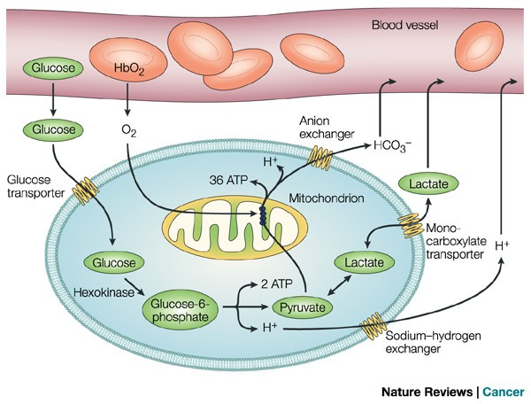

Glycolysis

The first stage, Glycolysis, takes place in the cytoplasm.During this step,one molecule of glucose(a six-carbon sugar)is broken down into two molecules of pyruvate(three-carbon each).This process does not require oxyen and produces a small amount: 2 ATP molecules and 2 NADH
Go to next page --->